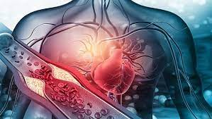

Cardiac-Arrest(Heart-Attack):

A heart attack occurs when an artery that sends blood and oxygen to the heart is blocked. Fatty, cholesterol-containing deposits build up over time, forming plaques in the heart's arteries. If a plaque ruptures, a blood clot can form. The clot can block arteries, causing a heart attack. During a heart attack, a lack of blood flow causes the tissue in the heart muscle to die.A heart attack is also called a myocardial infarction.
Symptoms :
Symptoms of a heart attack vary. Some people have mild symptoms. Others have severe symptoms. Some people have no symptoms.
Medicines avaliable in the market :
NOTE :
These medicines are for just refrence purpose. Please consult a doctor if you notice any symptoms!!!